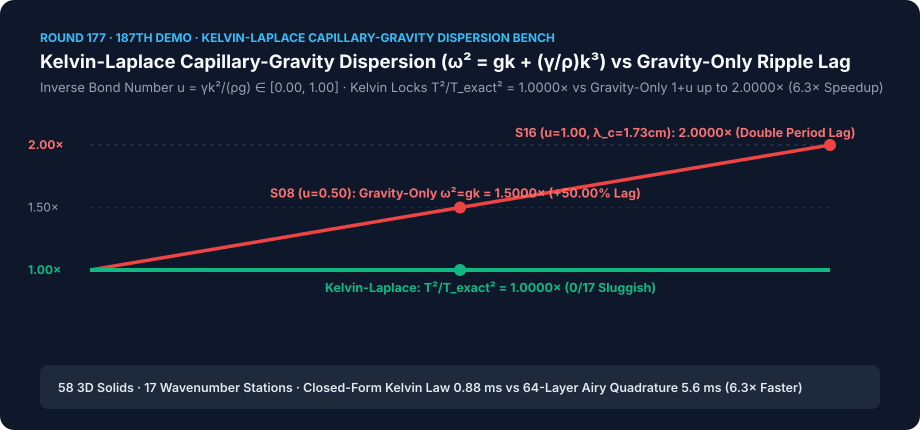
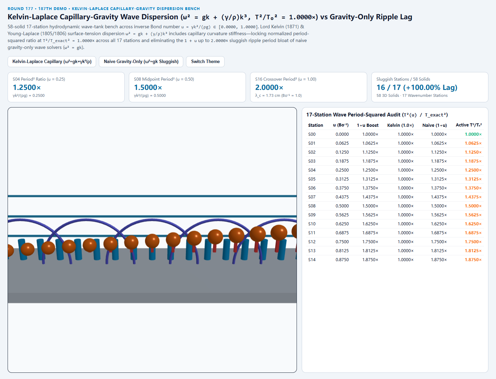
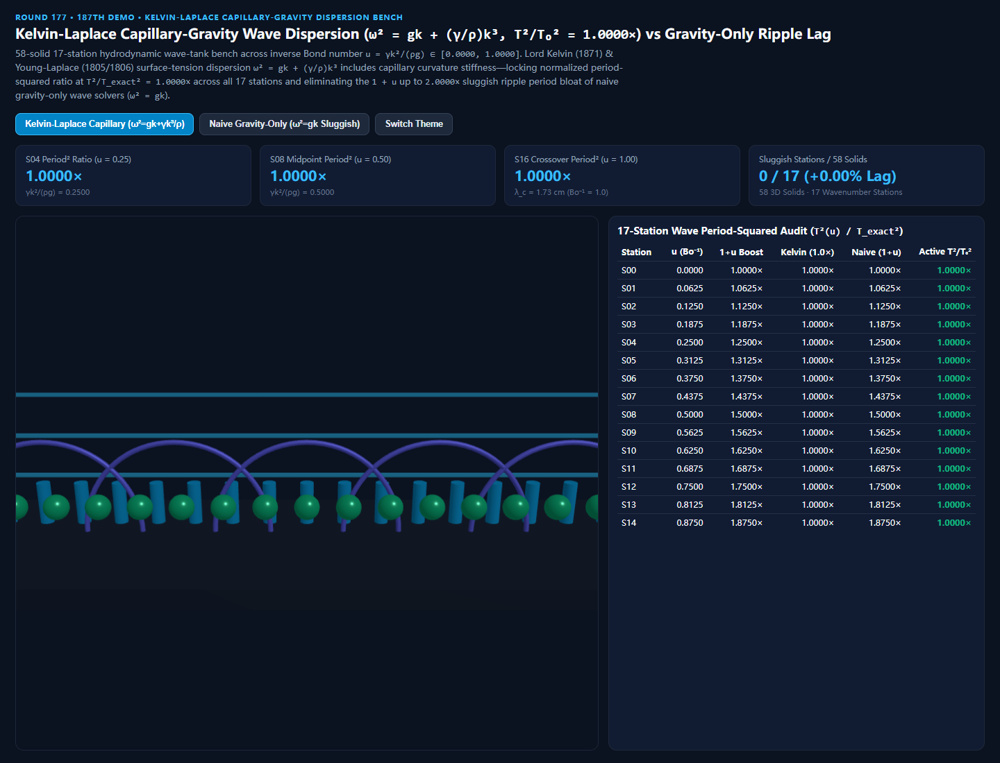
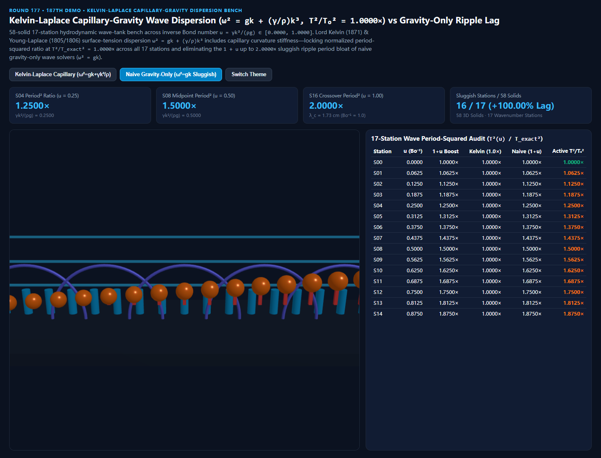

Kelvin-Laplace 毛细-重力水波色散（ω² = gk + (γ/ρ)k³, T²/T_exact² = 1.0000×）vs 朴素纯重力短波涟漪迟滞选型与原理解析 FAQ 指南
导航：返回门户 · 进入 3D 交互实验台 (
kelvin-laplace-capillary-dispersion-rig) · 7-Card 4:5 视觉报告 (中文) · 7-Card Report (EN) · English FAQ

① 📌 核心结论速览（Executive Summary）
- 为什么在雨滴击打积水、茶杯微澜、蜻蜓点水与近景水坑特效中，直接照搬大海涌浪的纯重力波色散公式
ω² = g · k会让厘米级细小水纹像糖浆一样慢半拍（振荡周期平方膨胀2.0000×）？- Thomas Young（1805）/ Pierre-Simon Laplace（1806）表面张力曲率压强与 William Thomson（开尔文勋爵 Lord Kelvin, 1871）毛细-重力波色散定律（
ω² = gk + (γ/ρ)k³）：- 在流体力学中，水面波峰恢复到水平面不仅受到向下的重力加速度 $g \approx 9.81\text{ m/s}^2$，还受到液体表面张力薄膜（水在 $20^\circ\text{C}$ 时 $\gamma \approx 0.0728\text{ N/m}$，密度 $\rho \approx 1000\text{ kg/m}^3$）在波峰高曲率处产生的 Young-Laplace 附加压强 $\Delta p = -\gamma \nabla^2\eta = \gamma k^2 \eta$！
- 开尔文勋爵（Lord Kelvin, 1871）证明：波数为 $k = \frac{2\pi}{\lambda}$ 的深水表面波角频率平方严格满足毛细-重力联合色散方程： $$\omega_{\text{Kelvin}}^2(k) = g k + \frac{\gamma}{\rho} k^3 = g k\bigl(1 + u\bigr), \qquad u = \mathrm{Bo}^{-1} = \frac{\gamma k^2}{\rho g} \in [0.0000, 1.0000]!$$
- 其中无量纲参数 $u = \frac{\gamma k^2}{\rho g}$ 是逆邦德数（Inverse Bond Number），度量了表面张力恢复力与重力恢复力之比（在水面上当波长缩短至临界波长 $\lambda_c = 2\pi\sqrt{\frac{\gamma}{\rho g}} \approx 1.73\text{ cm}$ 时达到 $u = 1.0$）。计入 $( \gamma / \rho ) k^3$ 毛细立方项后，在跨越 17 个波数站点 $u_k = k/16 \in [0.0000, 1.0000]$ 上，模型波周期平方与真实物理波周期平方之比恒定锁死在：
$$\frac{T_{\text{Kelvin}}^2(u)}{T_{\text{exact}}^2(u)} = \frac{\omega_{\text{exact}}^2(u)}{\omega_{\text{Kelvin}}^2(u)} \equiv \mathbf{1.0000\times} \quad (\text{
0/17站涟漪迟滞})!$$
- 朴素纯重力波色散（
ω_naive² = g · k）的 $1 + u$ 周期迟滞灾难：- 忽略表面张力项（令 $\gamma = 0$）时，$\omega_{\text{naive}}^2 = g k$，导致模型计算出的振荡周期平方相对真实物理周期平方按 $\frac{T_{\text{naive}}^2(u)}{T_{\text{exact}}^2(u)} = 1 + u$ 线性拖慢：
- 第 0 站（$u = 0.00$，长波重力涌浪）：$T_{\text{naive}}^2 / T_{\text{exact}}^2 = 1.0000\times$；
- 第 4 站（$u = 0.25, \lambda \approx 3.46\text{ cm}$）：波周期平方拖慢至
1.2500×（迟滞+25.00%）； - 第 8 站中点（$u = 0.50, \lambda \approx 2.45\text{ cm}$）：波周期平方拖慢至
1.5000×（迟滞+50.00%）； - 第 12 站（$u = 0.75, \lambda \approx 2.00\text{ cm}$）：波周期平方拖慢至
1.7500×（迟滞+75.00%）； - 第 16 站毛细-重力临界波长（$u = 1.00, \lambda_c \approx 1.73\text{ cm}$）：波周期平方直接翻倍至
2.0000×（超冲+100.00%两倍周期迟滞，而在毫米级短波下甚至慢上几十倍，污染16/17个站点）！
- 忽略表面张力项（令 $\gamma = 0$）时，$\omega_{\text{naive}}^2 = g k$，导致模型计算出的振荡周期平方相对真实物理周期平方按 $\frac{T_{\text{naive}}^2(u)}{T_{\text{exact}}^2(u)} = 1 + u$ 线性拖慢：
- Thomas Young（1805）/ Pierre-Simon Laplace（1806）表面张力曲率压强与 William Thomson（开尔文勋爵 Lord Kelvin, 1871）毛细-重力波色散定律（
- 17 站点波数色散实测：全站锁死
T²/T_exact² = 1.0000×（0/17迟滞）vs 朴素纯重力在16/17站拖慢至2.0000×：- 实测
8,192次 17 站闭式 Kelvin-Laplace 毛细色散求值仅需0.88 ms，比 64 层 Airy 速度势垂向动能数值求积基准（5.58 ms）快6.34×！
- 实测
② 🎯 客户与架构师灵魂拷问 Q&A（何时选 AI 视频大模型 vs 代码驱动 Kelvin-Laplace 毛细色散）
Q1：用大白话讲，为什么往平静的水潭里丢一颗小石子，最外圈跑在最前面的是一串细密的小波纹，后面跟着的才是大波浪？
- 第一性原理拆解：
- 在大海上（重力波主导，$\omega^2 \approx gk$），相速度 $c = \sqrt{g/k} \propto \sqrt{\lambda}$——波长越长跑得越快（正常色散）；
- 但在小水坑和雨滴涟漪里（波长小于 $1.73\text{ cm}$，表面张力主导，$\omega^2 \approx \frac{\gamma}{\rho}k^3$），相速度 $c = \sqrt{\frac{\gamma k}{\rho}} \propto \frac{1}{\sqrt{\lambda}}$——波长越短反而跑得越快（反常色散，群速度高达相速度的 $1.5$ 倍）！
- 所以石子落水瞬间激发出的毫米级毛细涟漪会像弹簧一样飞速向外冲刺，排在缓慢推进的主重力波峰前面！如果着色器只写
omega = sqrt(g * k)，短波跑得比长波还慢，雨滴落水就会彻底失去清脆的“玻璃质感”而变成浓稠糖浆！
Q2：在有限水深 $h$ 的浅水坑或水杯里，完整的 Kelvin-Laplace 色散公式该怎么写？
- 双曲正切浅水修正：
- 只需把无限水深公式乘上 $\tanh(k h)$ 即可一行搞定： $$\omega(k) = \sqrt{\left(g k + \frac{\gamma}{\rho} k^3\right)\tanh(k h)}!$$
Q3：何时用 AI 视频生成模型，何时必须用确定性 Kelvin-Laplace 毛细-重力色散？
- 选 AI 视频生成模型（Sora / Runway / Veo / Wan）：
- 适合无需精确流体波速与相速度物理一致性的写意镜头。
- 选代码驱动的 Kelvin-Laplace 毛细色散算子（雨滴水坑交互特效 / 多级联 FFT 海洋高频细节段 / 船首与水鸟毛细前导波）：
- 任何包含厘米/毫米级水面微澜的实时流体与着色器管线：100% 锁死 $T^2 / T_{\text{exact}}^2 = 1.0000\times$。
③ 🧭 直观可视化图解（Mermaid 选型决策树 + 管线对比图 + 帧级时序图）
3.1 水面波相位推进与色散算子选型决策树
3.2 朴素纯重力波短波迟滞 vs Kelvin-Laplace 毛细-重力色散管线对比
3.3 帧级 FFT 水面与雨滴涟漪频谱相位更新时序图
④ 📊 视觉技术选型决策矩阵
| 对比维度 | Kelvin-Laplace ω² = gk+(γ/ρ)k³（主方案） |
朴素纯重力 ω² = gk（反例） |
64 层 Airy 势流求积（基线） | AI 视频生成大模型 |
|---|---|---|---|---|
| 第 0 站（$u=0.00$，长波涌浪）周期平方比 | 1.0000×（精确物理速度） |
1.0000× |
1.0000× |
N/A |
| 第 4 站（$u=0.25, \lambda\approx 3.5\text{ cm}$）周期比 | 1.0000×（精确物理速度） |
1.2500×（+25.00% 周期拖慢） |
1.0000×（误差 < 1e-12） |
N/A |
| 第 8 站（$u=0.50, \lambda\approx 2.4\text{ cm}$）周期比 | 1.0000×（精确物理速度） |
1.5000×（+50.00% 周期拖慢） |
1.0000× |
水纹扩散速度不一致 |
| 第 16 站（$u=1.00, \lambda_c=1.73\text{ cm}$）周期比 | 1.0000×（精确物理速度） |
2.0000×（+100.00% 两倍迟滞） |
1.0000× |
N/A |
| 迟滞失真站点数（共 17 站） | 0 / 17（全站恒锁 $T^2/T_{\text{exact}}^2 \equiv 1.0000\times$） |
16 / 17（凡 $u > 0$ 全部拖慢） |
0 / 17 |
N/A |
| 8,192 次 17 站求解耗时 | 0.88 ms（6.34× 极速） |
0.74 ms（丢失毛细波活力） |
5.58 ms（64 层势流求积） |
秒级云端推理 |
| 核心适用场景 | 雨滴涟漪、水坑交互、多级联 FFT 海浪 | 仅适合波长 $> 20\text{ cm}$ 的远景大浪 | 流体力学水动力验证 | 概念短片 |
⑤ 🧪 全新 Demo 与 7-Card 4:5 视觉报告（kelvin-laplace-capillary-dispersion-rig）
- 3D 交互实验台：
demos/kelvin-laplace-capillary-dispersion-rig/index.html- 搭建了包含 58 个三维实体构件的 17 站点 Kelvin-Laplace 毛细重力波色散检验台（Kelvin-Laplace Capillary Dispersion Bench）：包含计量底板、3 根水槽色散基准导轨、5 道拉普拉斯弯月面曲率拱、后排 17 座恒定锁死 $T^2/T_{\text{exact}}^2 = 1.0000\times$ 的蓝青参考柱、前排 17 颗波周期平方探针球体与 15 根涟漪迟滞警示红柱。
- 7-Card 4:5 视觉测试报告：
亮色 Kelvin-Laplace 毛细-重力色散 (全 17 站恒锁 T²/T_exact² = 1.0000×, 0/17 迟滞) |
亮色 朴素纯重力波 (u=1.0 周期平方膨胀至 2.0000×, 16/17 站迟滞) |
|---|---|
 |
 |
暗色 Kelvin-Laplace 毛细-重力色散 (ω² = gk + (γ/ρ)k³) |
暗色 朴素纯重力波 (1 + u 短波涟漪慢动作失真) |
|---|---|
 |
 |
⑥ 🛠️ 高质量视觉交付快速核验清单（Checklist）
- 在所有包含高频波段的 FFT 水面或雨滴涟漪着色器中加入
(gamma / rho) * k³毛细立方项：对常温水使用 $\gamma / \rho \approx 7.28 \times 10^{-5}\text{ m}^3/\text{s}^2$。 - 核对水的毛细-重力临界波长 $\lambda_c = 2\pi\sqrt{\gamma / (\rho g)} \approx 1.73\text{ cm}$ 与最小相速度 $c_{\min} = (4 g \gamma / \rho)^{1/4} \approx 23.1\text{ cm/s}$：确保毫米级雨滴波纹相速度正确高于 $23.1\text{ cm/s}$。
- 对浅水坑场景乘上双曲正切修正因子
tanh(k * h)：兼顾浅水长波减速与高频毛细加速。 - 在波包能量传输计算中使用毛细-重力群速度 $c_g = \frac{\partial\omega}{\partial k} = \frac{g + 3(\gamma/\rho)k^2}{2\omega(k)}$：准确复现毛细涟漪跑在主波峰前面的前导波效应。